Somewhere back in school, you met vectors and matrices. An arrow with a couple of numbers on it. A little grid of numbers wrapped in big brackets. You learned to add them, multiply them, maybe rotate a triangle with one — and then, reasonably enough, you filed them away as one more thing school made you do.
Nobody mentioned that you were staring at the load-bearing wall of the entire modern AI era. Every large language model, every image generator, every voice that talks back to you — peel away the branding and the buzzwords, and what is left, all the way down, is vectors and matrices. This lecture is about why that's true, and what shifts in how you see AI once you actually believe it.
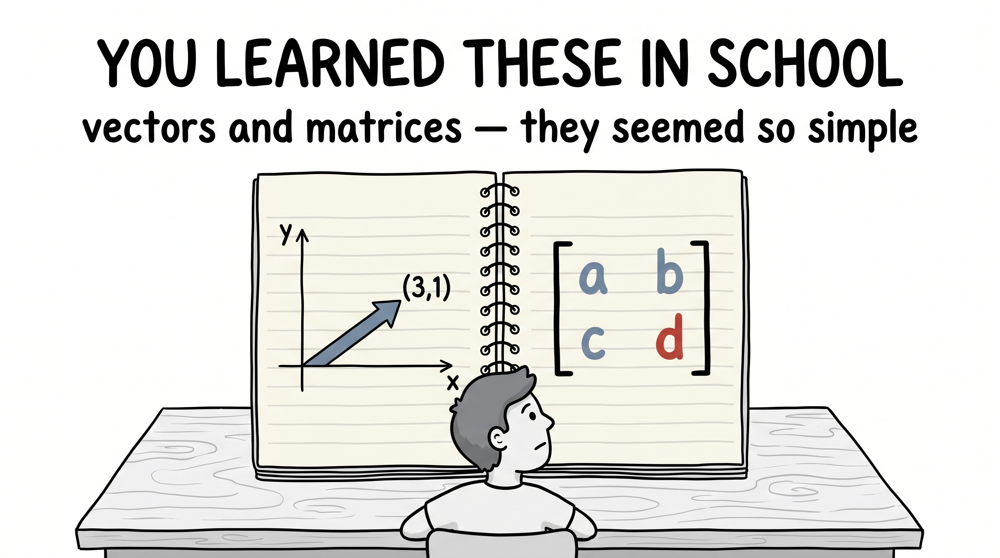
People say it like a slogan — "computers don't understand words, only numbers" — and then move right along. Let's actually sit with why, because it's the hinge the whole lecture swings on.
Go down. Past the apps, past the operating system, into the chip itself. A processor is built out of transistors, and a transistor is, at its heart, a switch: on, or off. Call them 1 and 0. Wire a handful together and you can build logic; wire that logic into an arithmetic unit and you get a machine that can do exactly two things to numbers — add them and multiply them. (Everything else you've ever heard of — subtraction, division, the entire tower — is built back up out of just those two.)
That is the complete vocabulary of the machine. Numbers in; add and multiply; numbers out. So if you want a computer to so much as touch a poem, a face, a song, or a film, you have no choice in the matter. You must first turn it into numbers. There is no other door in.
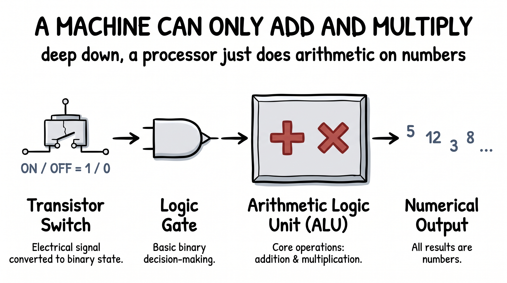
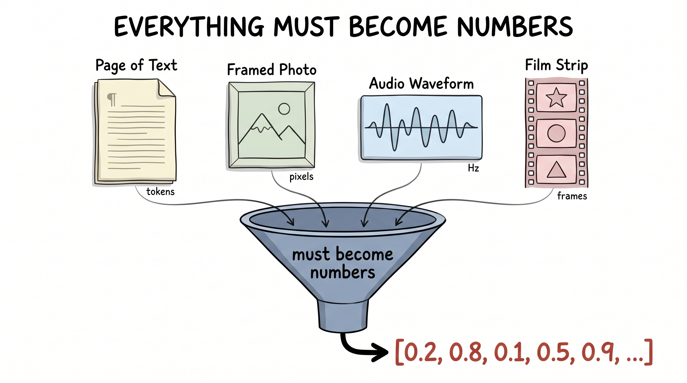
Now look at where we've actually arrived. Four great rivers of human media — text, images, audio, video — and for each one we now have machines that don't merely process it but create it. Language models write. Diffusion models paint. New models generate whole videos, and conjure voices and music out of silence.
It feels like four separate miracles. It isn't. It is one move, made four times over — and the move is hiding in the step nobody bothers to put on the poster.
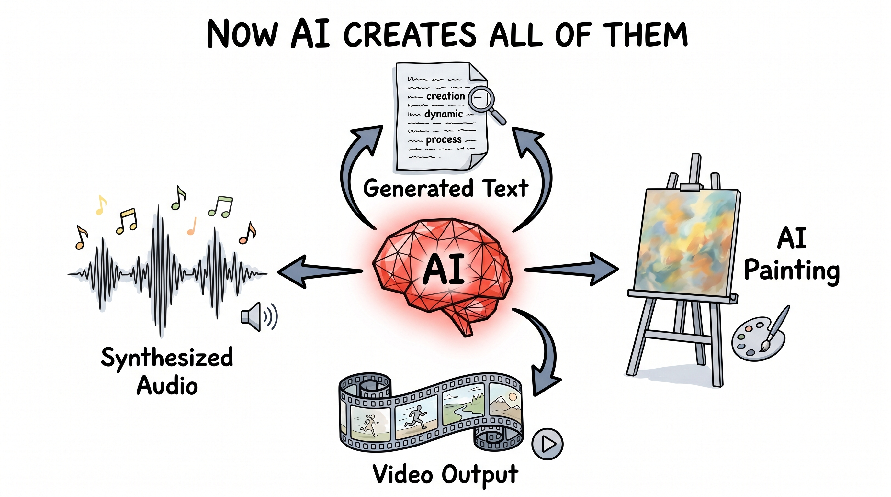
Here is the move. Before any clever model gets to do a single thing, every piece of media is first turned into vectors — lists of numbers — that live in a shared kind of space. Once it's vectors, the machine can add and multiply to its heart's content. Let's watch it happen, the same way, for all four.
You can't hand a model a sentence; you hand it numbers. First you tokenize: chop the text into tokens, the atoms of language. Usually these are subwords — "tokenization" becomes "token" + "ization." You could chop finer, at the character level, or coarser, keeping whole words; and exactly how finely you cut is a real, under-loved research question that quietly shapes everything downstream.
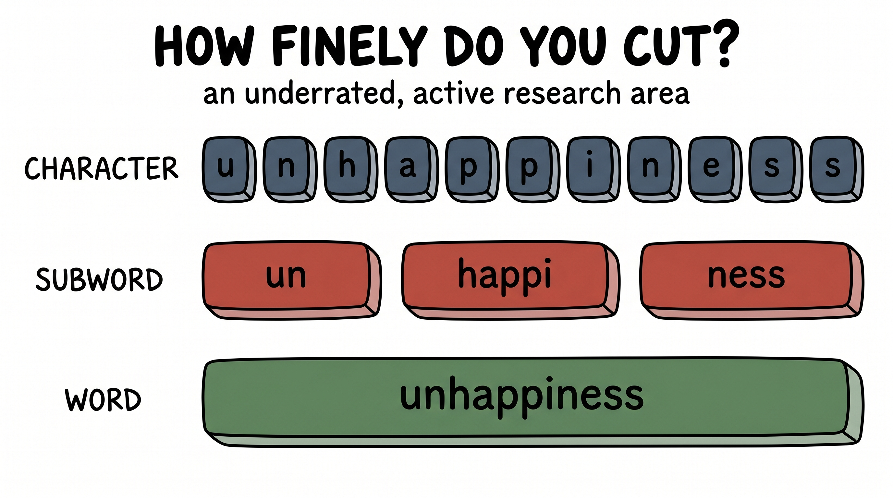
Then comes the vector. You keep a giant token embedding matrix — one row per token in the vocabulary, each row a vector of numbers — and to turn a token into a vector, you simply look up its row. The beautiful part: those numbers aren't hand-set. They start random and get trained, like the knobs from Lecture 2, until tokens that mean similar things drift to similar vectors. Click a token and see the numbers it becomes:
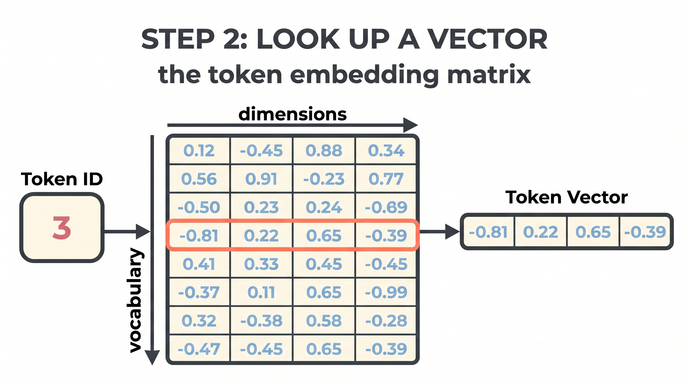
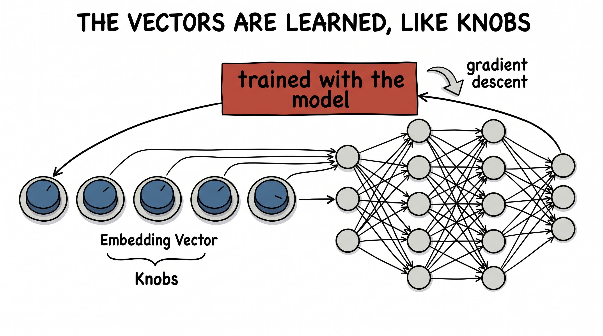
An image is already almost numbers. It's a grid of pixels, and each pixel is just a few values — how much red, how much green, how much blue. Stack them up and a photo is, quite literally, a matrix of numbers.
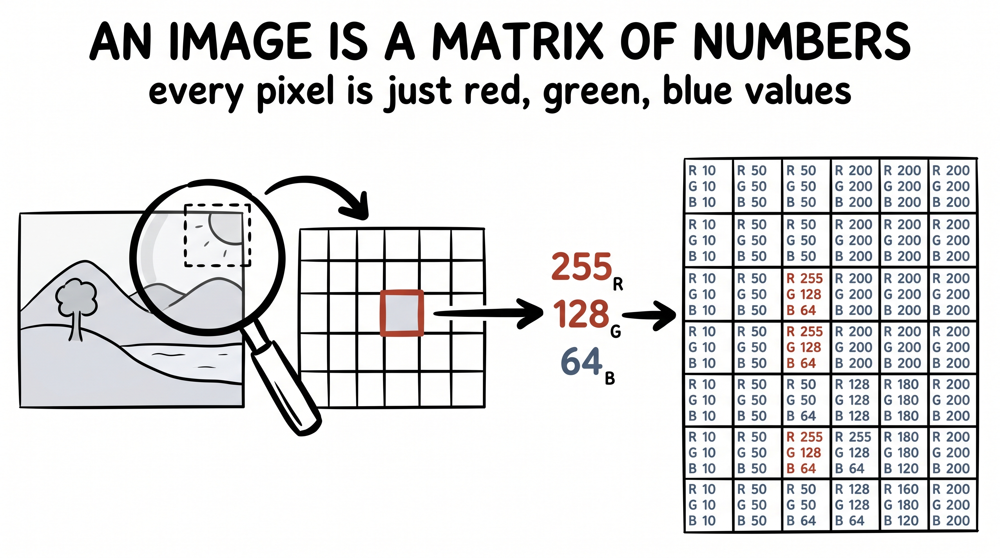
Modern vision models take one more step: they cut the image into small square patches, flatten each patch into a vector, and treat those patch-vectors as tokens — exactly like words. An image becomes a sentence of patches.
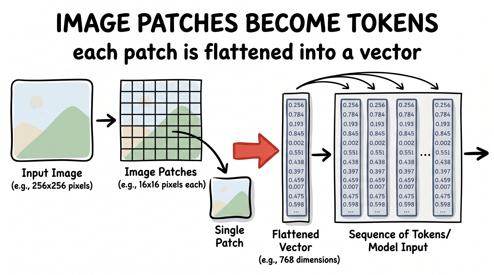
Sound is a wave — air pressure wiggling in time — and the first thing we do is sample that wiggle into numbers. But the modern trick is lovelier than that. A neural codec (SoundStream, EnCodec, and their newer cousins) runs the waveform through a convolutional encoder down to a slow stream of latent vectors, then squeezes each one through residual vector quantization: a stack of codebooks where each codebook cleans up the leftover error of the one before it. Out the other end, the sound is a tidy sequence of discrete audio tokens — turned into tokens, just like text.
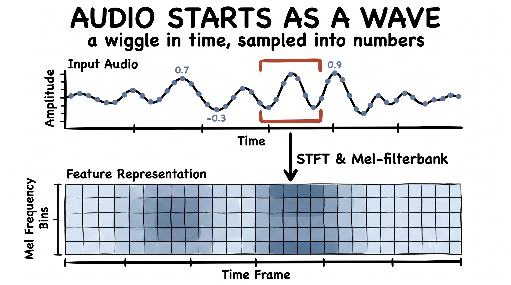
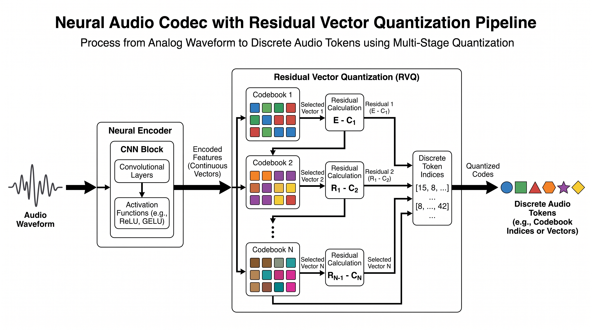
The hardest-looking medium, and the same idea once more. A video is a stack of frames over time. The modern tokenizers — the kind behind systems like Sora — first compress the video into a smaller latent volume in space and time with a 3D encoder, then slice that volume into spacetime patches: little cubes, each spanning a patch of the picture and a few frames at once. Flatten every cube into a vector, and frames-over-time become a sequence of patch-tokens.
Four media. One trick, four times: tokenize, then embed into vectors. And after that step — text, image, audio, video — it is all, blessedly, the same machine.
So here is the mental model to carry with you, and it's almost embarrassingly practical. Everyone stares at the model. The architecture, the parameter count, the leaderboard — that's where the attention and the hype pour in. But the model never actually touches your data. It only ever touches the vectors.
Which means a huge amount of the outcome is decided before the model runs at all — in the tokenizer, in how you chop and embed your media. Master this one idea and your eyes go somewhere different from everyone else's: when something isn't working, you look at the vectorization first. How is the text tokenized? Are the image patches the right size? Is the audio codec throwing away the very thing you cared about?
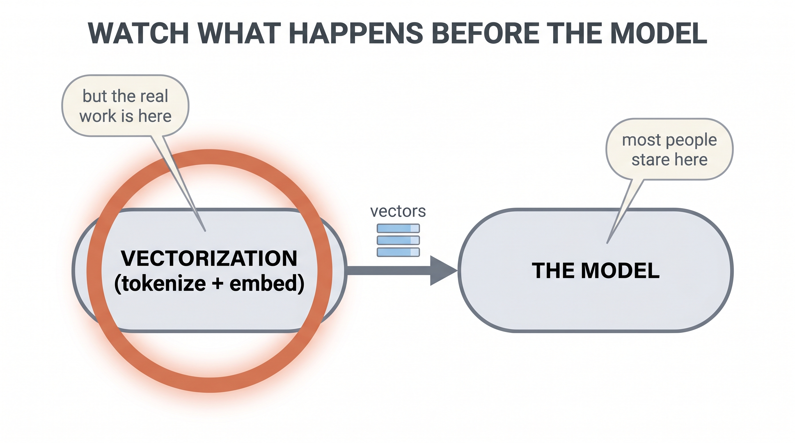
More often than people expect, the breakthrough was never a fancier model. It was a better way of turning the world into vectors — and almost nobody was looking there.
Before you touch the model, look at how the world became vectors. Tokenization and embedding quietly decide more than the architecture ever will — and that's exactly where almost nobody is looking. So look there first.